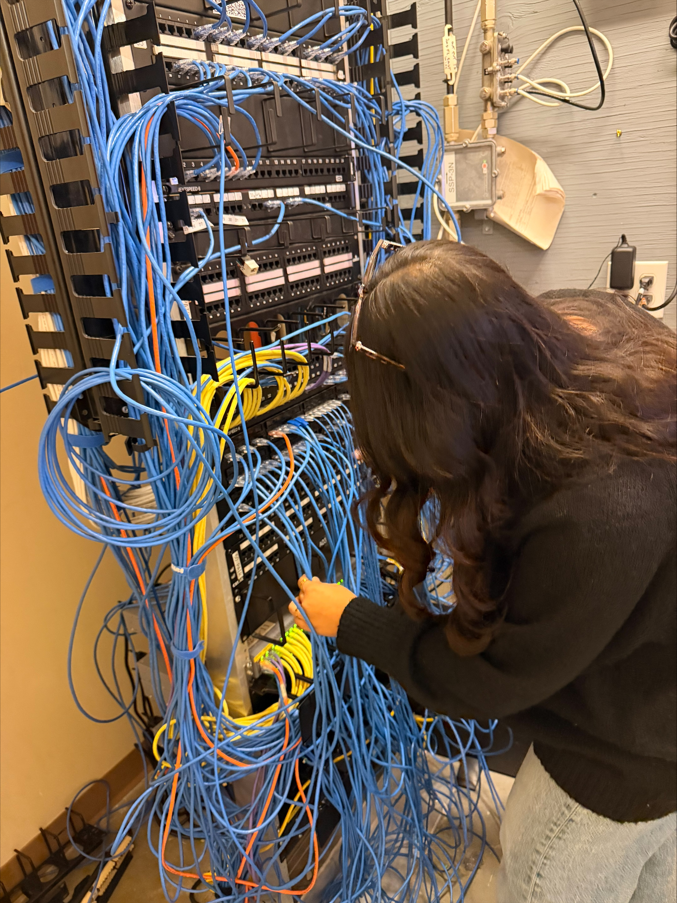

I am a third year Cybersecurity major at Penn State University with hands-on IT support experience and leadership roles in student organizations. I am
skilled in network security, risk analysis, and technical troubleshooting. I began my academic journey in
.
Relevant Coursework
Security and Risk Analysis, Network and Telecommunication Data, Information, People & Technology, Organization of Data,
Discrete Mathematics, Computational Systems Literature- Major GPA: 3.95
Goals
My goal is to use the knowledge that I have learned throughout my years at PSU,
and apply it forward as I continue to take in new information and concepts that will only better my understanding
and my skills for the future.
Skills
HTML5 Semantics
Problem Solving
Adaptability
Teamwork
Customer Service
Technical Skills and Proficiency
Skill
Level
HTML5
Intermediate
Python
Professional
MySQL5
Professional
Leadership/Involvement
Previous Roles
Fall 2023/Spring 2024- Muslim Student Association(MSA): Secretary
Fall 2024/Spring 2025- Muslim Student Association(MSA): Events Coordinator
Fall 2024/Spring 2025- Lion Ambassador
Fall 2024/Spring 2025- Global Student Organization(GSO): Treasurer
Summer 2025- New Student Orientation Leader
Summer 2025- New Student Welcome Leader
Fall 2025- IT Department: IT Intern
Current Roles
Fall 2025/Spring 2026- Muslim Student Association(MSA): President
Fall 2025/Spring 2026- Global Student Association(GSO): President
Fall 2025/Spring 2026- Student Government Association(SGA): Supreme Court Justice
Fall 2025/Spring 2026- Advising Council: Student Representative
Spring 2026- IT Department- Part-Time IT Support Specialist
Experience
My Experience
Last semester, Fall 2025, I had the opportunity to intern at the IT Department on campus at Penn
State Lehigh Valley. This internship taught me a mix of different IT related things. During the internship, I was
tasked with a variety of technical support and troubleshooting duties. These included assisting with Wi-Fi setup and
troubleshooting, supporting faculty and staff with classroom technology, and maintaining various hardware systems like
computers, projectors, and audio equipment. I was also involved in preparing devices for campus-wide software conversions,
managing inventories, and assisting with event setups.

IT Internship Photo- Tracing cables in the data closet, figuring our whether or not
the connection is online.
Additional Details
This internship provided me with a deeper understanding of IT systems in a campus environment.
I was able to apply theoretical knowledge gained from my coursework and gain hands-on experience with
troubleshooting, system management, and technology support in real-world scenarios.